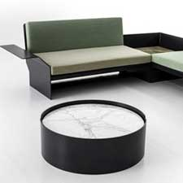

Creating a connection from one human being to another.
A geniune soul in a contemporary designer.
Tord Boontje was born in the Netherlands in 1968. He studied in the Design Academy in Eindhoven industrial design. Then he got a aster’s degree from the Royal College of art in London in 1994. He founded his own studio in 1996. He also became an art professor i 2006 at the Royal College of Art. He then became an industrial and furniture designer. He has a design philosphy that a “belief that modernism does not mean minimalism, that contemporary does not forsake tradition, and that technology does not abandon people and senses.”
He has designed furniture, lighting, accessories, textiles, tableware and many miscellaneous items. Tord Boontje has worked with a range of international companies such as Hewlett Packard, Target, Alexander McQueen, Meta, Philips, Yamaha and many others. He is still working with Habitat, Swarovski and Moroso. In 2006, he worked for Target and created a Christmas collection for Target. Today he still works on many new designs branching. He has branched into laptop designs, stamps and coffee makers. His studio is on-line to check into and purchase his designs for our homes.
Modernism does not mean minimalism,
contemporary does not forsake tradition,
& tradition does not forsake people & senses.
The 22nd Floor
{kind=link}
Designed for smaller spaces, slim enough to fit in most interiors, but large enough to be comfortable. He imagined the person who owns this sofa living on the 22nd floor in NYC.
Bon Bon
{kind=link}
Designed in 2006 for Moroso, tables in corian with dye-sublimation or glass. Made out of laser cut steel with a powder coating.
{kind=link}
{kind=link}
{kind=link}
His designs often feature vines that seem to reach out and grab you, whether in a lamp, chandalier or chair.
Botanical
{kind=link}
{kind=link}
Botanical is a meandering laser cut chandelier with various distinct Tord flower and leaf motifs. The illuminated copper and brass flowers highlight the distinct patina of the rusted corten steel.
Garland
{kind=link}
{kind=link}
The Garland Light is a long metal garland of flowers that can be wrapped around a light bulb. Thus allows it to be more individually your own light unique to your home.
Midsummer

Tord loves paper, since it’s simple. Usually paper lamps are glued together; which is a messy, tedious job that’s done by hand. In his lamp, there is no gluing at all, only cutting but the results look handmade.
{kind=link}
{kind=link}
He's made a name for himself borrowing freely from the natural world, incorporating it's mystical & organic shapes.
The Enchanting Tree
{kind=link}
{kind=link}
Reinvents the gesture of champagne in which each participant plucks a flute from the tree. It’s made of suspended golden branches that can be used to hang the six Perrier-Jouët flutes, blossoming at the base of an ice bucket to preserve the champagne’s coolness.
Light Touching
{kind=link}
{kind=link}
A Christmas installation across multiple sites simultaneously presented at Swarovski Kristallwelten. The Christmas Star sends out its light, just like crystals. This piece symbolises the light that touches all of us, creating a connection from one human being to the other.
Phillips
{kind=link}
The Senseo Special Edition is like a rich bouquet of flowers for your kitchen. Tord borrowed inspiration from nature. He engages and entices a person’s imagination and emotions to create designs that are as broadly accessible as they are appealing.
Abu Dhabi
{kind=link}
{kind=link}
A giant star map, a lighting installation proposal for the White Hotel in Abu Dhabi in 2003.
Torn Boontje has long cultivated a delicate marriage of design with emotion that is as broadly accessible as it is enticing.
Resources
Awards
- 2002 – Bombay Sapphire Prize for Glass Design
- 2003 – Designer of the Year, Elle Decoration
- 2003 – Best Lighting Design, Elle Decoration
- 2003 – Reader's Choice for Future Classic, Elle Decoration
- 2004 – Best product, New York Gift Fair
- 2004 – Dedalus Design Award
- 2005 – Innovation Prize for textile collection, Cologne Fair
- 2005 – Dutch Designer of the Year
- 2006 – IF Product Design Award
- 2007 – Red Dot Design Award
- 2008 - Elle Décor Design Award
- 2011 - Wallpaper Design Awards